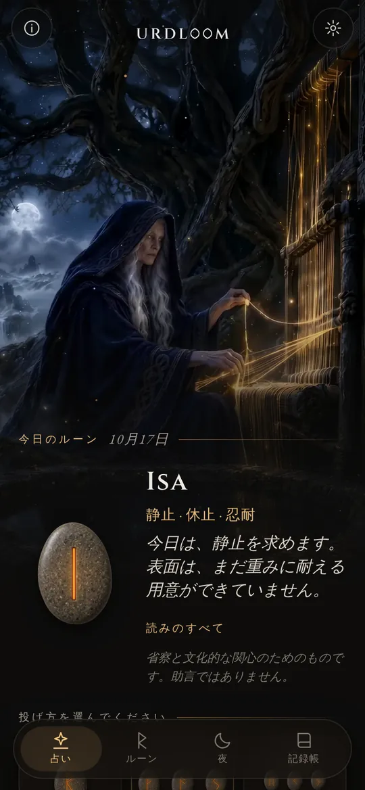
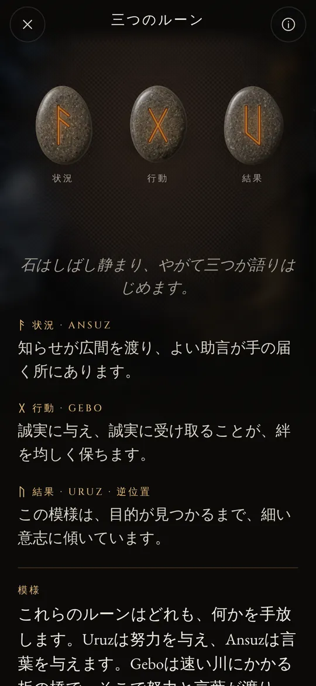
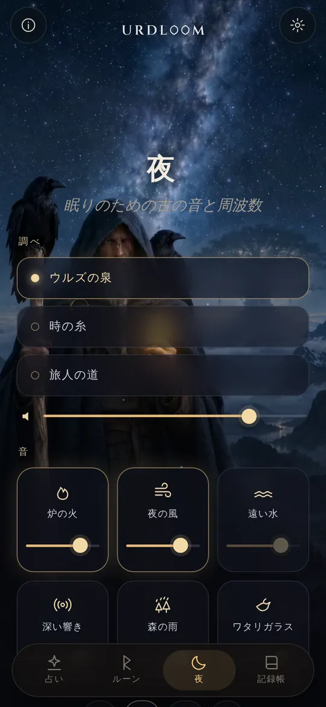
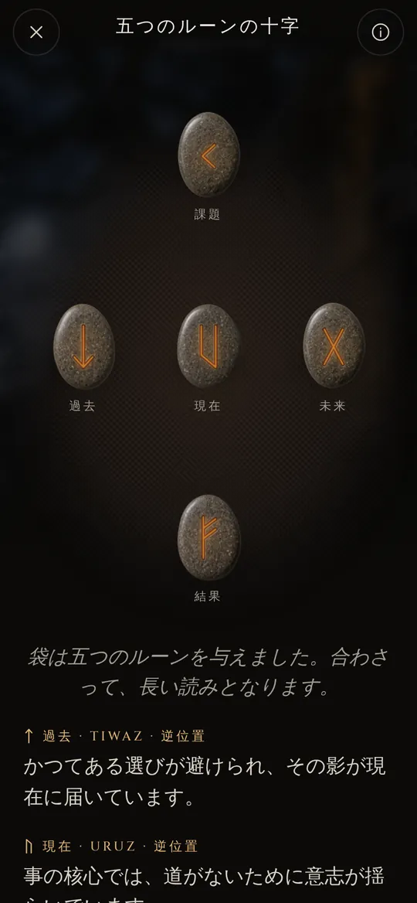

泉のほとりの三人の女
古い北欧の詩では、三人のノルンが世界樹ユグドラシルの下の泉のほとりに座っています。彼女たちはその根に水を注ぎ、木片に刻みを入れ、生まれてくるすべての者の生を定めます。最も年長なのがウルズです。その名は「起きてしまったこと」を意味し、泉は彼女の名で呼ばれています。
Urdloomの名は彼女と、運命が織られるといわれた機（はた）に由来します。アプリはその空気を大切にしています。手には石の入った袋、床には布、そして星占いではなくサガの声で書かれた読み。

そこから、多くを知る乙女たちがやって来る。木の下の湖から、三人の乙女が。『ヴォルスパー』第20節
握り、振り、手を離す
袋を握ると、手の中で石が鳴ります。手を離すと石は布の上へ飛び、転がり、止まり、一つずつ裏返ります。その下に読みが現れます。

一つのルーン
目の前の一日のための石を一つ。あるいは、はいかいいえで答えられる問いのために。タップすれば投げられます。


三つのルーン
状況、行動、結果。短いサガのように左から右へ読み、それから一つにまとめて読みます。結びの糸が、三つがどう語り合っているかを示します。

五つのルーンの十字
中央の横の列に過去、現在、未来。上に課題、下に結果。そしてその中心に、あなたがいます。




読みはすべて手で書かれています。二十四のルーン、二つずつのすべての組み合わせ、そして三つの組み合わせ2,024通りのすべてを、二十二の言語それぞれで。待っている間に何かが生成されることはありません。

二十四のルーン
エルダー・フサルクは最古のルーン文字で、およそ2世紀から8世紀にかけて刻まれました。二十四の文字は八つずつ三つの族に分かれます。それぞれをエットと呼び、先頭に立つルーンの神の名がつけられています。石に触れると、その読みが開きます。
フレイのエット
ハガルのエット
テュールのエット
ルーンの名は、どの言語でも古い形のまま残しています。それは文字そのものの名であり、学者たちがルーン詩と最古のアルファベットから再構成したものです。
ルーンの短い歴史
ルーンは何よりもまず文字です。ゲルマンの人々はおよそ千五百年にわたり、木や骨、金属や石にルーンを刻んできました。文字と、くじを投げる古い習わしは、こうして私たちのもとへ届きました。

白い布の上のくじ
ローマの歴史家タキトゥスは、ゲルマンの人々が実のなる木の枝を切って小片にし、しるしを刻んで白い布の上にまくと書いています。祭司か家の長が一つずつ三つを拾い上げ、それを読みます。彼はそのしるしがルーンだったとは言っていませんが、その所作こそUrdloomが受け継いでいるものです。
最初の銘文
デンマークのヴィモーセの沼地で見つかった骨の櫛には、知られている中で最も古いルーン銘文の一つが刻まれています。ただ一語、harjaです。同じ時代の槍先やブローチ、護符を見ると、この文字がすでに北方一帯に広まっていたことがわかります。
一つの石に並ぶすべての文字
ゴットランド島のキュルヴェルの石には、何者かが二十四の文字すべてを順番どおりに刻みました。現存する最古の完全なフサルクです。この並びは、最初の六文字 f、u、th、a、r、k から名づけられています。
黄金の角杯
デンマークのガレフスで見つかった二本の黄金の角杯の一つには、頭韻を踏んだ詩が一行刻まれています。「われ、ホルトの子フレワガスティズ、この角を作りき」。これはゲルマン諸語の詩として、最も古いものの一つです。
ヴァイキング時代の十六文字
スカンディナヴィアでは文字が十六に減らされ、新フサルクとなります。その文字で何千もの記念碑が建てられ、デンマークのイェリングの大きな石もその中にあります。
詩が書き留められる
アイスランドの写字生たちがエッダの詩を書き留めます。『ヴォルスパー』ではノルンたちがウルズの泉のほとりに座り、『ハーヴァマール』ではオーディンが風吹きすさぶ木に九夜吊るされ、叫びとともにルーンを拾い上げます。
ルーンごとの詩
ノルウェーとアイスランドのルーン詩は、より古いアングロ・サクソンのものとともに、ルーンの一つ一つに短い詩句を添えています。家畜は親族のあいだに争いを生み、雹は最も冷たい穀物、氷はとても滑りやすい。ルーンの意味について知られていることの多くは、これらの詩句から来ています。
ふたたび読む
内省のためにルーンを使うのは、それらの詩とエッダの情景をもとにした現代の復興です。Urdloomはその伝統の中に、隠さずに立っています。古代の神託を名乗るのではなく、古いしるしを心をこめて読むだけです。

眠りのための古の音と周波数
一日が終わると、旅人は星空の下へ出てきます。調べを選び、その上に音を重ね、タイマーを合わせてください。画面を消しても音は鳴り続け、やがてひとりでに消えていきます。
「ウルズの泉」「時の糸」「旅人の道」の三つの調べ。喉歌、フレームドラム、弓で奏でるタゲルハルパで作られています。
それぞれ音量を変えられる、六つの音の層を重ねられます。炉の火、夜の風、遠い水、深い響き、森の雨、ワタリガラス。
すべての音はUrdloomのために作られました。インターネットから流れるものは何もありません。
小さくても大切なこと
- 毎朝のルーン
- 最初の画面で、石が一つ伏せたまま待っています。お望みなら、あなたのために引かれたルーンを毎朝短いお知らせでお伝えします。
- 記録帳
- 心に語りかける読みを、立てた問いとともに残しておけます。
- 共有できる読み
- 読みを一枚の画像として送れます。落ちたままの石と、その下の言葉を。
- 二十二の言語
- どの言語も、それを読む人の手で書かれ、確かめられています。書体と文字の大きさも変えられます。
ここで起きたことは、ここに留まります
Urdloomはインターネットなしで動きます。アカウントも登録も広告もなく、解析や追跡の仕組みも一切含まれていません。あなたの問い、読み、記録帳は、あなたの端末の中に留まります。
プライバシーよくある質問
Urdloomは未来を告げますか？
いいえ。読みは内省と文化への関心のためのものです。古いルーンがそうであったように、読みは指し示すだけで、意味はあなた自身の暮らしの中で形をとります。アプリ内のいかなる内容も、医療、金融、法律その他の専門的な助言ではありません。
なぜ言葉が古風なのですか？
ルーンは詩とサガと謎かけの世界から来ています。私たちは読みをあえてその声で書き、どの言語でも、できるかぎりルーンの伝統に近づけました。
インターネット接続は必要ですか？
いいえ。読みから夜の音まで、すべてがアプリの中にあります。
どの言語がありますか？
英語、トルコ語、ドイツ語、フランス語、スペイン語、イタリア語、ポルトガル語、ロシア語、ウクライナ語、ポーランド語、オランダ語、スウェーデン語、ノルウェー語、フィンランド語、ギリシャ語、アラビア語、ヒンディー語、インドネシア語、日本語、韓国語、中国語、アルバニア語です。